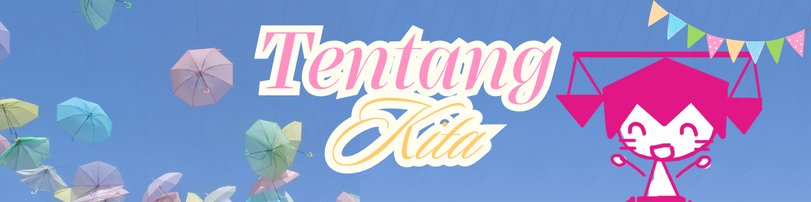

Nama lengkap: Arya Victoria Yunus
Tanggal Lahir: 12 December 2012
Sekolah:SMP Santa Ursula Jakarta
Kelas/Nomor Absen: IX-5/2

Nama lengkap: Arya Victoria Yunus
Tanggal Lahir: 12 December 2012
Sekolah:SMP Santa Ursula Jakarta
Kelas/Nomor Absen: IX-5/2
Saya membuat website ini untuk projek sekolaj IL kecil yang berkolaborasi dengan 3 matapelajaran (PPKN, IPS, dan TIK)
Di website ini saya membahas banyak topik seperti SDGs (kebanyakan SDGs 10 yaitu berkurangan kesenjangn) dan juga jenis-jenis kerjasama!!
Semoga website yang saya buat dapat membantu anda mendapat info tentang topik-topik ini terima kasih ^u^